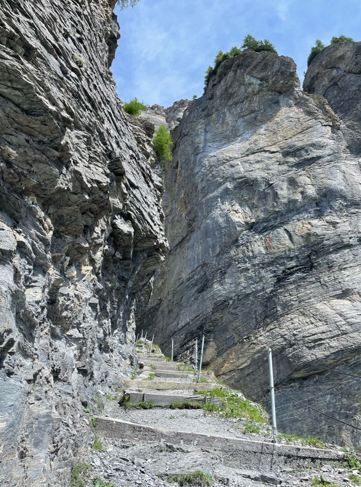

David Plüss zum 60. Geburtstag
Wo beginnt der Weg zum Gemmipass? In Bern, wo man den Zug Richtung Brig besteigt und unter den Alpen hindurch ins Wallis fährt? Oder in Leuk an der Rhône, von wo aus das Postauto serpentinenreich nach Leukerbad hinaufkurvt? Jedenfalls beginnt die Wanderung zum eigentlichen Gemmiweg am nördlichen Ortsrand von Leukerbad, zunächst durch einen sanft anmutenden Wald. Immer in Richtung der steilen, hochragenden Felswand, die den Ort, gelegen auf 1400m ü. M., von drei Seiten umgibt. Je mehr man sich dem Gemmiweg nähert, desto stärker wird die Überzeugung: Da ist nichts. Da kann gar kein gangbarer Weg sein, allenfalls eine Kletterwand. Da ist nur die steile, 600m hohe Felswand, die demütig macht. Eine noch breite, rampenartige Traverse führt hinauf. Dann wird der Weg schmal. So schmal, dass man sich nicht vorstellen kann, dass dieser Pfad seit dem 14. Jahrhundert eine der zentralen Verbindungen zwischen dem heute katholischen Wallis und dem reformierten Berner Oberland war. Dass auf diesem schmalen, steilen Pfad Säumer mitsamt Tieren ihre Waren transportiert haben und vielleicht Tourist:innen auf Sänften hinaufgetragen wurden. Ich nehme sie in Gedanken mit – die Reisenden vergangener Jahrhunderte, die den Weg unter ganz anderen Bedingungen als heute antraten. Die Zeitdimensionen verschieben sich. Ein Pass als einzige Verbindung zwischen den Tälern, der nur im Sommer begehbar ist, verändert den Reisetakt erheblich. Schritt für Schritt wird diese Entschleunigung auf dem Weg erlebbar.
In der Gemmiwand. (Bild: Miriam Löhr)
Ein Fremder im Dorf
Ein Blick zurück nach Leukerbad, auf dessen Holzchalets unten im Tal die
Serpentinen immer wieder die Sicht freigeben. In meinen Gedanken
erscheint James Baldwin (1924–1987), der weltbekannte US-amerikanische
Schriftsteller, der seinem Aufenthalt in Leukerbad mit seiner Schrift
«Fremder im Dorf», in der er (nicht nur) den US-amerikanischen Rassismus
analysiert, ein literarisches Denkmal gesetzt hat. Im Ort selbst ist
erst seit 2018 ein Hinweis in Form eines Portraits aus Heftklammern zu
finden, das die sich kritisch mit Geschichte und Kolonialismus
auseinandersetzende Künstlerin Sasha Huber (*1975) an seinem ehemaligen
Wohnhaus angebracht hat. Über das Dorf schrieb Baldwin in seinem Essay
in den 1950er Jahren:
«Es liegt sehr hoch, aber nur vier Stunden von Mailand und drei von
Lausanne entfernt. Trotzdem kennt es kaum jemand, und nur wenige
Menschen würden ihre Ferien hier verbringen wollen. Andererseits sind
die Bewohner des Dorfes durchaus in der Lage, zu kommen und zu gehen,
wie es ihnen passt, und das tun sie, zum Beispiel wenn sie eine Stadt am
Fuß des Berges mit etwa fünftausend Einwohnern aufsuchen. Es ist der
nächste Ort, in dem man einen Film sehen oder zur Bank gehen kann. Im
Dorf selbst gibt es weder ein Kino noch eine Bank, eine Bücherei oder
ein Theater; sehr wenige Radios, einen Jeep, einen Kombi und im Moment
eine Schreibmaschine, nämlich meine; eine Erfindung, die die Frau von
nebenan noch nie gesehen hatte. Etwa sechshundert Seelen leben hier,
alle katholisch – das schließe ich aus der Tatsache, dass die
katholische Kirche das ganze Jahr über geöffnet ist, die protestantische
Kapelle hingegen, die etwas abseits des Dorfes auf einem kleinen Hügel
steht, nur im Sommer, wenn die Touristen kommen. […] Die Landschaft ist
einfach überwältigend, ringsum erheben sich mächtige Gipfel, Eis und
Schnee, so weit das Auge reicht.» (Baldwin, Fremder im Dorf, o. S.)

Sasha Huber, 2018, Portrait aus Heftklammern von James Baldwin (1924–1987), auf dem Chalet Burg Hüsli in Leukerbad. (Bild: Miriam Löhr)
Ein europäischer Knotenpunkt
Mit diesem ambivalenten Blick auf den Ort vor 70 Jahren geht es weiter
auf dem Gemmiweg. Man steigt Biegung um Biegung, Serpentine um
Serpentine hinauf, Leukerbad mit seinen Thermalquellen wird immer
kleiner. Das hochgelegene Plateau, auf dem der Ort vom Rhônetal aus
gesehen liegt, wird selbst zum Tal. Es erscheint wie ein Wunder, dass
der Weg sich immer weiter durch die Felswand windet. An keiner Stelle
stellt sich Verunsicherung ein. Wohl aber ein demütiges Staunen, das mit
der Höhe noch ansteigt. Rechterhand türmt sich die Felswand auf,
linkerhand erscheint eine kleine Wiese, auf der der Zugang zum
Klettersteig liegt. Ab hier erhöht sich die Dichte anderer Menschen, die
auf dem alten Säumerpfad unterwegs sind. Die Schlussserpentinen
erscheinen langsam im Blickfeld.
Auf 2269m ü. M. ‹oben› angekommen, entfaltet sich eine grossartige Sicht
auf das Daubenhorn bis hin zum Wildstrubel. Zur Rechten liegt flach und
still der Daubensee, im Winter eine plane Ebene, die zum Langlaufen
einlädt. Weiter hinter dem Daubensee, vorbei am historischen Berghotel
Schwarenbach, schliesst sich am Fuss von Rinderhorn und Altels die
Spittelmatte an, von wo aus der Abstieg nach Kandersteg nicht mehr weit
ist. So weit sieht man von hier oben zwar nicht, aber es wird klar:
Diese vermeintlich abgelegenen Pfade waren über Jahrhunderte ein
europäischer Knotenpunkt kulturellen und wirtschaftlichen Austauschs.
Kandersteg mit seinem internationalen Pfadi-Heim und seinem von vielen
Zugverbindungen frequentierten Bahnhof zeugt noch heute davon. Im 18.
Jahrhundert wurde der Gemmiweg ausgebaut und ersetzte endgültig den
weiter östlich in der Felswand gelegenen Alten Gemmiweg jenseits der
Plattenhörner. Die Luftseilbahn, die parallel zum heutigen Gemmiweg
verläuft, schafft seit 1957 Menschenmengen hinauf und hinunter. Wer die
Seilbahn nimmt, verpasst jedoch das Erlaufen des Weges, der sich schroff
und steil zeigt, aber bald das Vertrauen derjenigen gewinnt, die ihn
unter die Füsse nehmen.
Blick vom Gemmipass auf 2269m ü. M. in Richtung Lämmerenboden. (Bild: Miriam Löhr)
Demut und Erhabenheit
Was macht den Gemmiweg zu einem theologisch bedeutsamen Ort? Zuerst ist es das Staunen darüber, sich als Mensch, der weder über Flügel noch über Steinbockhufe verfügt, an solch einem Ort bewegen zu können. Der eigene Ort im Ganzen der Schöpfung wird spürbar. Die erhabenen, steilen Felsen rufen nach Psalmworten. Anderer Sprache entziehen sie sich, verschlagen mir gar die Sprache: die Macht der Menschen, allem einen Namen zu geben, versagt hier und ist bedeutungslos. Der Körper hingegen geht den Weg und hilft dem sprachlos staunenden Verstand aus. Die Gemmi gipfelt nicht in einer Kapelle oder einem Kreuz. Sie hat von sich aus eine Art spirituelle Dichte ohne menschliche Bauten. Der Gang über den Pass berührt Dimensionen einer Transzendenzerfahrung. Ich bin nicht der erste Mensch, der ihn geht, und nicht der letzte. Der Weg selbst ist eine Schwelle: im engen Sinn, indem die Felswand und insgesamt 900 Höhenmeter überwunden werden, und im symbolischen Sinn: Dieser Weg kann nicht abgekürzt oder abgebrochen werden. Es gibt keinerlei Möglichkeiten abzubiegen, neben dem Weg ist durchgängig der Abgrund. Die Ernsthaftigkeit eines Schwellenrituals wird hier spürbar. Oben angekommen, ist rückblickend der begangene Weg zu sehen. Davor liegt das Land: es ist hell und weit.
Miriam Löhr ist Postdoktorandin am Institut für Praktische Theologie an der Universität Bern.
Weitere Artikel von {{ author.author }} finden Sie hier:
Zur Vertiefung:
- Aerni, Klaus: Art. «Gemmipass», in: Historisches Lexikon der Schweiz, verfügbar unter: www.hls.ch (4.7.2024)
- Baldwin, James: Fremder im Dorf. Ein schwarzer New Yorker in Leukerbad, Zürich 22012 [1955].
- Huber, Sasha: The Firsts - James Baldwin, verfügbar unter: www.sashahuber.com (4.7.2024).